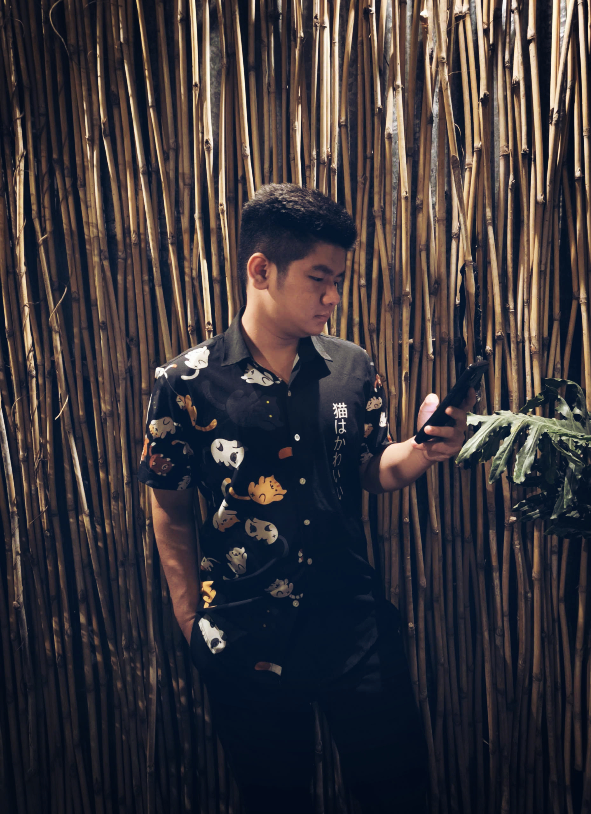
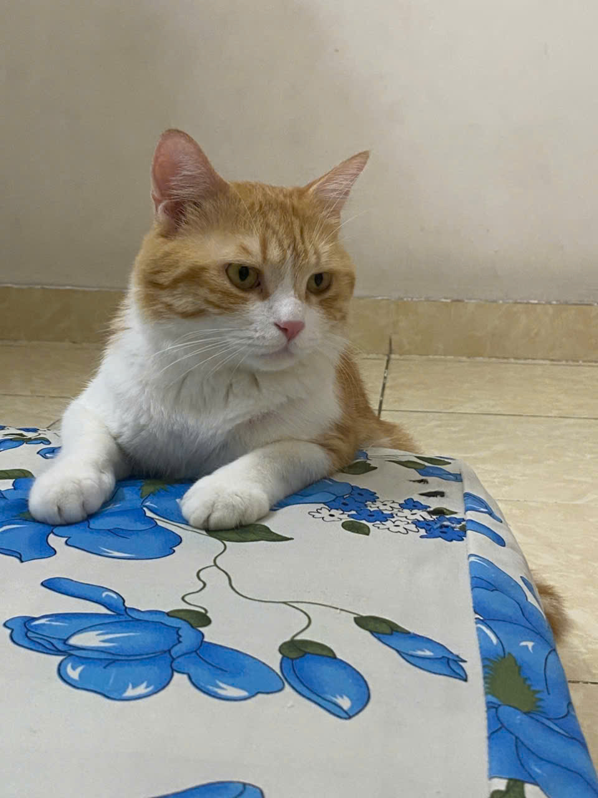
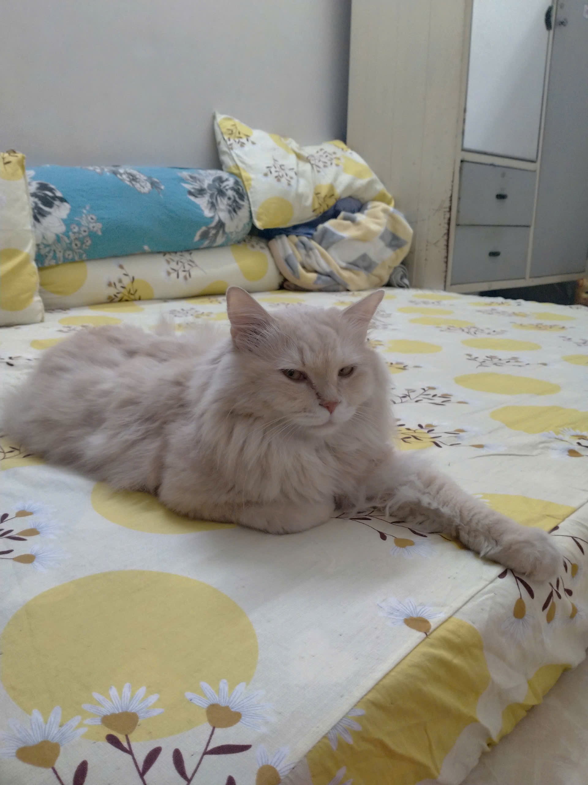

Hi, I'm Dao Minh Phu
Software Tester · Manual Testing · Automation Testing
Software Engineering graduate from Van Lang University with hands-on experience in Manual Testing and Automation Testing through projects at YOEDU Academy and an internship at GESO Company. Experienced in Test Case Design, UI Testing, API Testing, Database Testing, Regression Testing, and Bug Tracking.
Software Engineering
Van Lang UniversityExploring and Growing in Software Testing.
I am a Software Engineering graduate from Van Lang University with hands-on experience in Manual Testing and Automation Testing through projects at YOEDU Academy and an internship at GESO Company. I have worked on practical testing tasks including requirement analysis, Test Case Design, Functional Testing, UI Testing, API Testing, Database Testing, and Regression Testing. I also have experience with Selenium WebDriver, TestNG, Postman, Jira, Git, and GitHub.
I graduated in 2026 with a GPA of 3.15/4.0. Through my training and internship experience, I have practiced requirement analysis, Test Case Design, Functional Testing, UI Testing, API Testing, Database Testing, and Regression Testing.
I can analyze requirements, create Test Scenarios and Test Cases, and perform Functional Testing, UI Testing, API Testing, and Database Testing for assigned features. I can also document and track defects, perform Retesting after fixes, and conduct Regression Testing to help ensure that the system works as expected.
Through my training and internship experience, I have also developed attention to detail, logical thinking, and a careful approach to software testing.



A foundation in Software Engineering and Software Testing.
Studied Software Engineering at Van Lang University, with practical experience gained through hands-on projects at YOEDU Academy and an internship at GESO Company.
Van Lang University
Major: Software Engineering
Building practical experience in Software Testing.
Practical experience gained through academic projects at Van Lang University, hands-on projects at YOEDU Academy, and an internship at GESO Company, with a focus on Test Case Design, UI Testing, API Testing, Bug Tracking, Retesting, and Regression Testing.
Skills and knowledge developed through Software Testing practice.
I enjoy learning through practical experience, paying attention to details, and working carefully with others to improve my understanding of software testing.
Testing projects that reflect my practical learning and experience.
Projects that reflect my learning journey, attention to detail, and willingness to explore different aspects of Software Testing through academic and practical experiences.
Let's connect and talk about opportunities in Software Testing.
I am open to entry-level opportunities where I can learn from real projects, contribute to the team, and continue developing my skills in Software Testing.
Contact Information
I enjoy learning from others, working as part of a team, and taking time to improve through feedback and everyday experience.